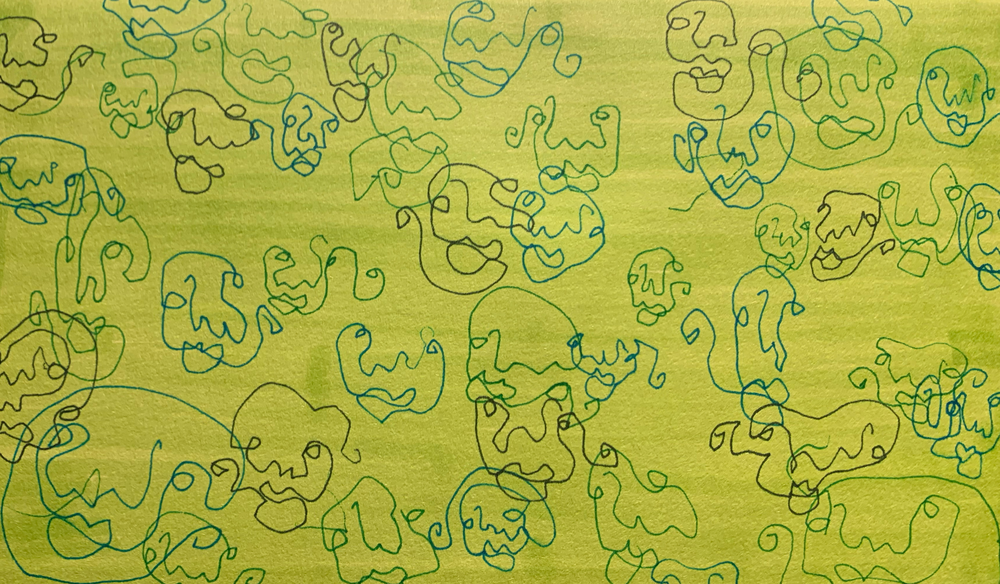

Øvelser
Tegneøvelser er en fantastisk måde at udforske nye teknikker og styrke din kreativitet på.
Du kan til og med kombinere øvelser, og tilpasse dem til dine egne motiver og behov.
I denne samling af øvelser kan du finde forskellige tilgange, der giver dig
frihed til at eksperimentere og udfordre din stil.
Alt det du
ikke ser

Højre
vs.
venstre